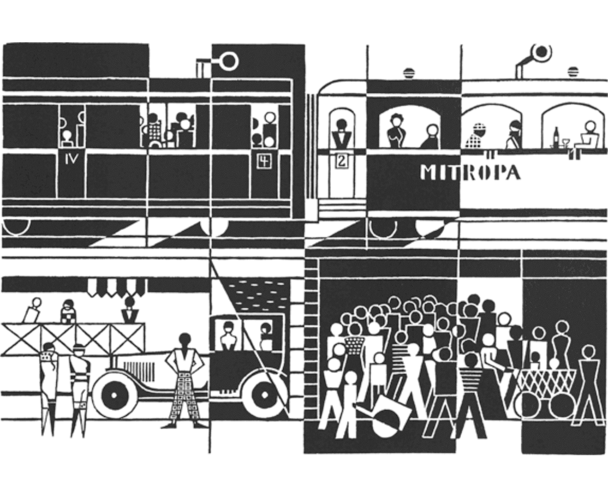
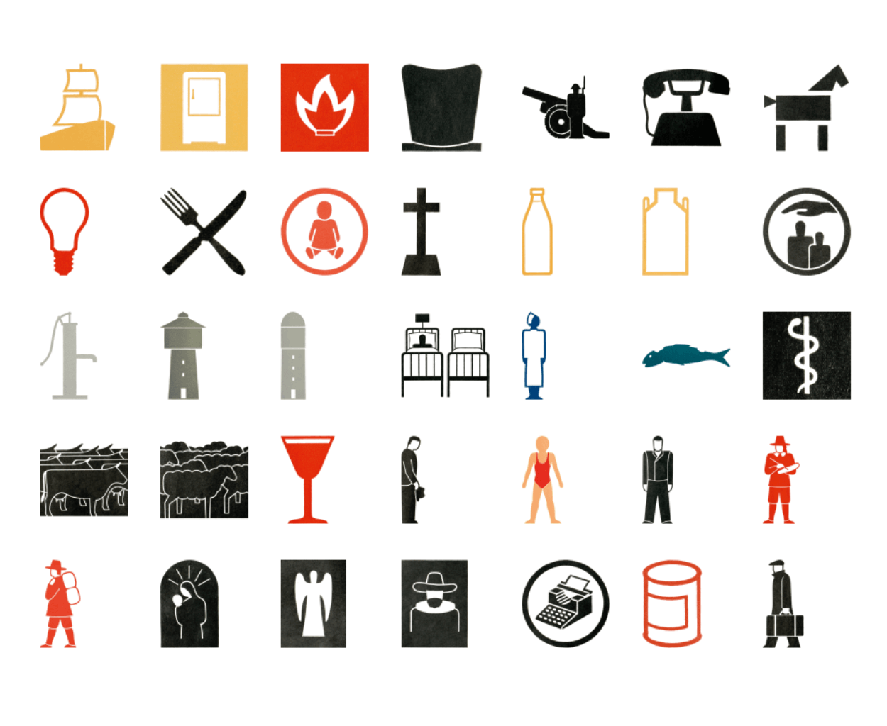
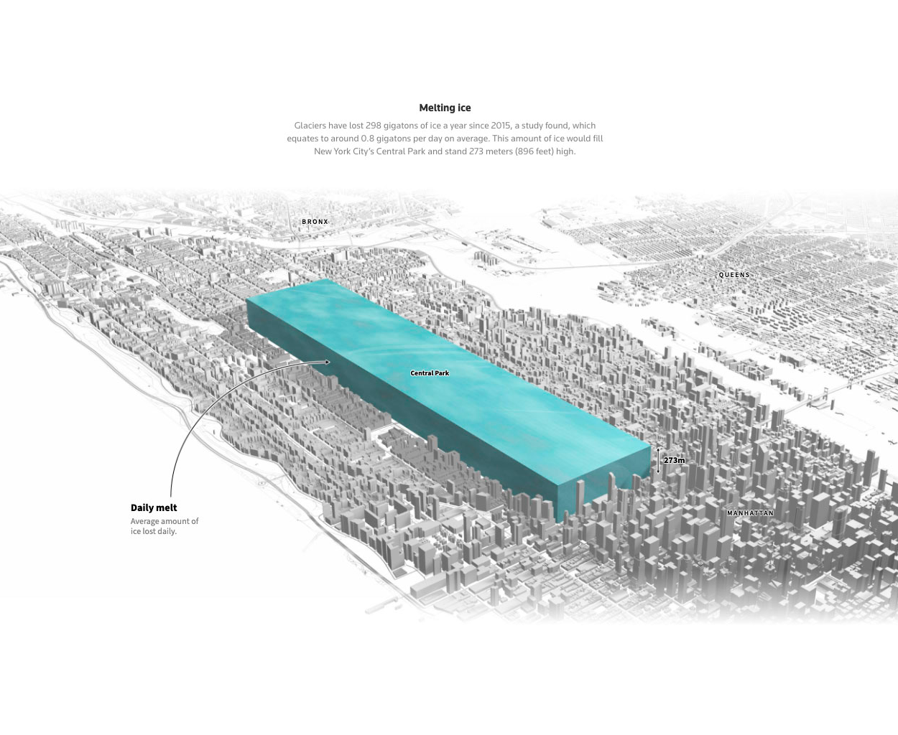

Gerd Arntz y Marco Hernández son dos diseñadores de distintos contextos. El primero fue un diseñador nacido en Alemania en los inicios del siglo XX con un estilo que buscaba simplificar acciones y gestos, mientras que Hernández, que nació en Nueva York y sigue vigente el día de hoy, buscaba mostrar a través de la infografía datos sobre el medioambiente y la demografía con herramientas computacionales e ilustraciones propias.
GERD ARNTZ
Gerd Arntz fue un artista revolucionario de Alemania en el siglo XX, quien grababa figuras abstractas en grabados de madera (xilografía), los cuales describían la vida de los trabajadores y la lucha de clases. Es entonces cuando Otto Neruath, quien estaba realizando proyecto, pide ayuda a Arntz, para realizar un sistema basado en lenguajes y con una estructura clara que fuese fácil de entender para los trabajadores, puesto que gran parte de ellos eran analfabetas, esto acabaría llamándose sistema Isotype. Es con este proyecto que Arntz logro diseñar miles de pictogramas e ilustraciones abstractas que representaban exactamente lo que querían comunicar a través de diseños que simplificaban la forma, gestos y colores.

Mitropa de Gerd Arntz (1925).
Diversos pictogramas de Gerd Arntz.

Diversos pictogramas de Gerd Arntz.
Isotypes de Gerd Arntz.
MARCO HERNÁNDEZ
Marco Hernández es un Diseñador gráfico, radicado en Nueva Yorks. Actualmente editor gráfico en The New York Times. Antes de eso fué desarrollador de visualización de datos en Reuters, Singapur. También ha trabajado como Infografista Senior para el periódico La Nación (Costa Rica) y como profesor de diseño de información en la Universidad de las Ciencias y el Arte de Costa Rica. Este diseñador infográfico se enfoca en crear trabajos que tienen relación con representación de datos medioambientales y demográficos, esto mediante muestras creadas computacionalmesnte e ilustraciones propias.
Organic carbon released into the atmosphere during the wildfires season in California in 2020 (Hernández, 2022).

Cantidad de hielo que se derrite a nivel mundial diariamente comparado a escala con Central Park (Hernández, 2021).
Gráfico del aterrizaje del explorador marciano 'Tianwen-1' (Hernández, 2021).
Diagrama de la competencia de natación 200m con obstáculos durante los juegos olímpicos en Paris el año 1900 (Hernández, 2021).